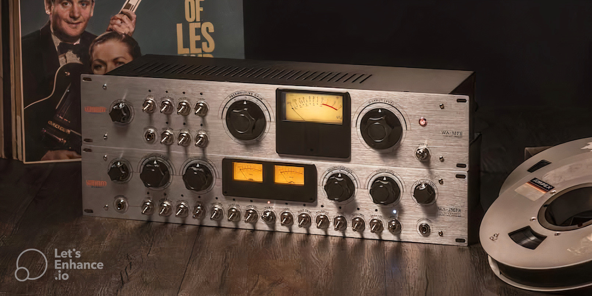

Go Home
Go Back
Exclusive SOS review now live!
Warm Audio have released the WA-MPX and WA-2MPX, a pair of single and dual-channel valve microphone preamps that aim to authentically recreate the sought-after sound of an early tape machine preamp which helped to pioneer reel-to-reel recording.
We’ve already had our hands on the new units here at SOS, click here to take a look at our exclusive review.
The WA-MPX and WA-2MPX feature a 12AX7 and a 6AQ5A valve in each channel, with the valves being carefully selected and matched for optimal performance. The units also boast a range of features designed to enhance the vintage character of the preamps, including a custom-wound Cinemag input transformer, which is designed to replicate the sound of the original preamps, as well as a Tone switch that allows users to switch between two different tonal options.
Additionally, the WA-2MPX includes a number of advanced features, such as a high-pass filter, phase reverse, and selectable impedance. Overall, the Warm Audio WA-MPX and WA-2MPX offer a unique and authentic sound that is sure to appeal to recording engineers and musicians looking for that vintage analog character.
Published 21/3/23
Music Category
Reference: https://www.soundonsound.com/news/warm-audio-launch-wa-mpx-wa-2mpx-preamps